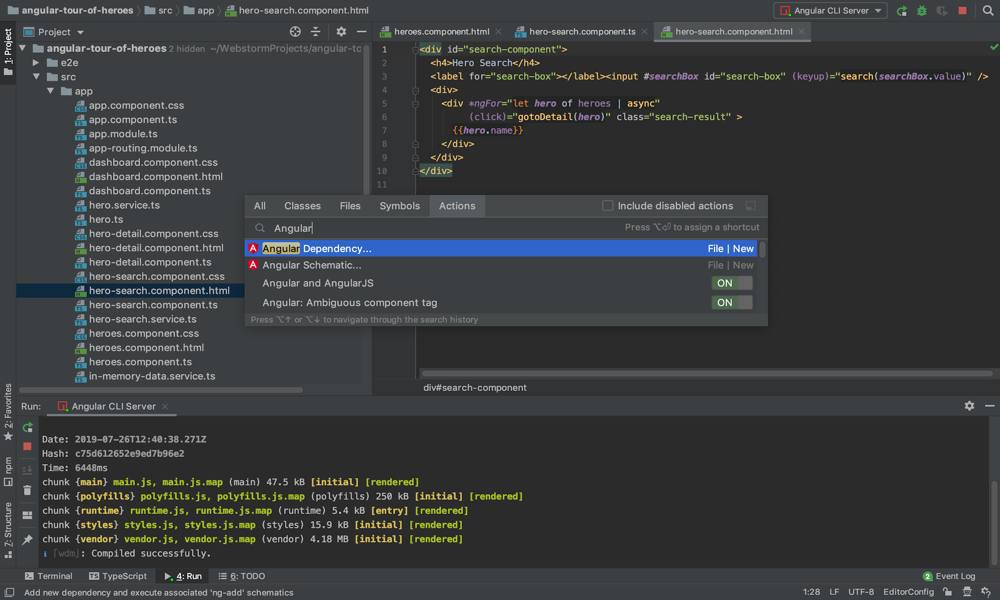

Antes que nada, hagamos una aclaración para evitar confusiones … AngularJS y Angular no son lo mismo. AngularJS es un framework para desarrollo web construido por Google e inicialmente liberado en 2010. Angular (a secas) también es un framework para desarrollo web, y también construido por Google (y de hecho por varios de las mismas personas que hicieron AngularJS). Lo que hoy se conoce como “Angular” fue inicialmente llamado “Angular 2” ya que era visto como la siguiente versión de Angular 1.x (lo que hoy es llamado AngularJS). Sin embargo, dado que no son retrocompatibles, y que Angular 2 tiene un alcance más amplio, se decidió mantener la rama 1.x de Angular bajo el nombre AngularJS mientras que la rama nueva se quedó simplemente como Angular
Una de las grandes diferencias entre un framework y una biblioteca, es que el framework es un montón de funcionalidades “genéricas” preparadas para que nosotros hagamos funcionalidad específica. En cambio, una biblioteca es una única función genérica. Basados en esta definición podemos decir que un framework consiste de varias bibliotecas escritas para manejarse todas juntas. Bajo este pensamiento, podemos decir que Angular preparó todo para que nuestra aplicación solo utilice los módulos (o bibliotecas) que vamos a necesitar en nuestra WebApp.
Con este pensamiento, cuando iniciamos a construir nuestra aplicación con Angular, solo vamos a tener el módulo principal llamado “core”, con él vamos a poder ejecutar nuestra aplicación y escribir cada uno de nuestros componentes. Si nuestra aplicación necesita generar rutas tenemos que agregar el módulo de ruteo, que Angular ya nos provee, y si necesitaramos agregar formularios, Angular también tiene un módulo increíble para eso. A estas alturas podrás estarte preguntando cuántos módulos/bibliotecas tiene Angular internamente, y la verdad es que son muchas pero la mayoría son independientes entre sí por lo que nuestra webapp solo necesita importar los módulos necesarios para poder trabajar.
Para construir aplicaciones Angular creamos:
templates HTML que contienen etiquetas especiales de Angular,
componentes de clase que gestionan dichos templates,
servicios que encapsulan lógica de la aplicación,
y módulos que organizan los componentes y servicios.
Iniciamos la aplicación en el módulo “root”, y Angular asume el control, presentando el contenido de la aplicación en el navegador y respondiendo a las interacciones del usuario de acuerdo con las instrucciones que hemos proporcionado